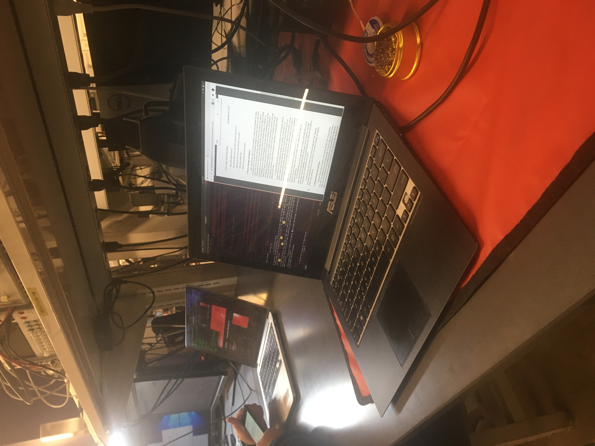

Team Members
Progress Report for Calvin Walter Heintzelman

Week 2:
Date: 1/24/2020Total hours: 10
Description of design efforts:
I primarily worked on setting up, maintaining, and updating the webiste. We did not use the given template file because I was hoping to refresh my memory on HTML and maybe improve my skills with it. The team and I agreed on website template after looking through freewebtemplates.com and freewebsitetemplates.com. My work streamlined my team members process of entering information, text, and images in their weekly reports. I also learned how to show pictures and links in HTML. Now each of us need to enter the preliminary ungraded progress report to see what feedback we will get.
We also had a couple of team meetings. During these team meetings, we were deciding on certain hardware to purchase. We also worked on the week 2 assignment to estimate costs, decide of functionality, consider constraints, etc. We have also been deciding on microcontrollers and believe we may go with the ARM Cortex L0 at this point, but this may change.
I also had a meeting with Todd to discuss some options for our project. He told me that we could possibly use hardware filtering (low pass, high pass, and bandpass) for audio equalization using op amps instead of using a DSP chip. Ultimately, we believe that we are going to still use a DSP chip because we want to include reverb, distortion, etc. Todd also suggested that we should look at dangerousprototypes.com and hackaday.com for microcontroller ideas based on others' project ideas.
Week 3:
Date: 1/31/2020
Total hours: 10
Description of design efforts:
This week, our team primarily looked into microcontrollers and worked on the two reports due this week. When looking into microcontrollers, we could not decide between the MSP430 and the STM32WB series of microcontrollers. My job was to research the STM32WB series of microcontrollers. From my research, this is the only series of STM32 microcontrollers that has built-in Bluetooth support. I also found documentation for digital signal processing for STM32 microcontrollers using CMSIS (link). This documentation is primarily associated with STM32F429XX and STM32F746XX microcontrollers, but it says that it can be adapted to any STM32 microcontroller so we thought it may be useful. Sadly, after discussing this microcontroller with Professor Meyers, we discovered that it is an M4 model that would likely be too power hungry for our application. We were, however, introduced to the MSP432 models, but decided to use one of the MSP 430 models instead. Now we are waiting for it to ship so we can tinker with it for the next lab.
 Here is a useful image comparing the two STM32WB models (link).
Here is a useful image comparing the two STM32WB models (link).
 I also did a large portion of the work on the software overview assignment for this week. I partially or fully entered all relevant information for every section of this assignment. This includes citing sources, creating diagrams (to the right and below), and typing up information. This was a good opportunity for our group to discuss what the software application should be and how we should implement things like interrupts. I also did some solo research on the DSP library for the MSP430 family, including its data structures, functions, how they relate, and how they can be used together. I learned that the dsp library stores its values as either 16-bit or 32-bit integers, some of them represent whole numbers while others represent fractional values. More information can be seen in assignment 3.
I also did a large portion of the work on the software overview assignment for this week. I partially or fully entered all relevant information for every section of this assignment. This includes citing sources, creating diagrams (to the right and below), and typing up information. This was a good opportunity for our group to discuss what the software application should be and how we should implement things like interrupts. I also did some solo research on the DSP library for the MSP430 family, including its data structures, functions, how they relate, and how they can be used together. I learned that the dsp library stores its values as either 16-bit or 32-bit integers, some of them represent whole numbers while others represent fractional values. More information can be seen in assignment 3.

Week 4:
Date: 2/7/2020
Total hours: 10
Description of design efforts:
This week I downloaded Code Composer Studio version 9.3.0 on Ubuntu 18.04 and got some software to run on our MSP430 microcontroller. After several hours of tinkering, I was able to get code to get an LED to blink. After another hour or so, I was able to get the LED to blink at adjustable rates. As seen in the image below, I was able to get the software environment completel set up. This will help our team because it allows us to run our microcontroller programs in a Linux environment when necessary and I can help out with the project remotely. I was also able to go through some of the software and some documentation to familiarize myself with certain methods, functions, constants, etc.

Furthermore, I downloaded Android studio on my Linux Ubuntu 18.04 laptop. It took me a while to get it to run properly, but I was finally able to get it to run after a while. I was running into issues with the program lagging, but I switched the app emulator to an older version of an Android phone. As seen in the image below, the app provides an emulator to test an application during development. I was able to load in a program to say "Hello world", but that is about it. By accomplishing this, I am able to work on our remotely. I also became somewhat familiar with the Android Studio IDE environment. Hopefully I can help other team members install it and use it if necessary. This will also streamline the process of getting the app to connect to our microcontroller via Bluetooth (got to start somewhere!).

Week 5:
Date: 2/14/2020
Total hours: 10
Description of design efforts:
This week I updated several sections of the team website. Under the "Documents" tab, I uploaded all of our past homework assignments as download links. All of them are uploaded as PDF files, except homework 5, which is uploaded as an xlsx file. Having uploaded all the homework assignments as PDF files is convenient because most web browsers have a built-in PDF viewer, so we do not have to open another application to view our homeworks. This speeds up the process of going through past work so that we do not need to constantly be opening up our OneDrive account to view minute details of past assignments.

I also updated the "References" tab of our team's website. To do this, I went through homework 5 to get a list of all components we have purchased hitherto for this project. I then found all the relevant websites that contained datasheets, documentation, technical specifications, design and development help, and/or erratas for our components and coded a link to them under on this page. This is helpful to our team because it allows us to quickly find our documentation and sort through it when necessary. This prevents wasting time using Google when it would faster to link to the documentation sources directly.

Finally, I added some slider widgets to our app to increase my overall familiarity with the software. I also had to borrow a friend's phone to emulate the app while debugging. I had a lot of trouble getting Android Studio to run due to heap memory allocation issues, but I was eventually able to figure it out by deleting the hidden files associated with the program and redownloading it. This helps my team by furthering the development of the app in our project. I am also more able to help other team memebers who may want to try to download Android if they are having trouble. I will try to get some sort of Bluetooth implementaion done by next week.

Week 6:
Date: 2/21/2020
Total hours: 20
Description of design efforts:
 This week I did most of the coding for our app in Android Studio while my team member Carson did a lot of the research behind my code. As a team our goal for this week was to get the app to communicate from some cell phone to our bluetooth module and through UART. As seen in the picture to the right, we were able to get all three functionalities working! My primary job was to scan for Bluetooth devices, connect specifically to our Bluetooth module, and then send a single integer to the module based on a slider value. All three of these things were accomplished using various help forums and code documentation for Android Studio (link).
This week I did most of the coding for our app in Android Studio while my team member Carson did a lot of the research behind my code. As a team our goal for this week was to get the app to communicate from some cell phone to our bluetooth module and through UART. As seen in the picture to the right, we were able to get all three functionalities working! My primary job was to scan for Bluetooth devices, connect specifically to our Bluetooth module, and then send a single integer to the module based on a slider value. All three of these things were accomplished using various help forums and code documentation for Android Studio (link).
As seen in the code below, I accomplished the aforementioned goals by generating a callback function whenever the bluetooth module on the Android phone detected a device during its scanning process. It then checks for the correct name (audiobeamer) and then connects and binds to our Bluetooth module. A service is added to the Bluetooth with a characteristic that changes anytime the slider
value changes. It is a bit too complicated to explain succinctly, however just know that the app connects and binds to the Bluetooth module to create a service that sends an integer value whenever the slider is altered in the app. This helps my team because now we can alter values of disortion, equalization, reverb, and echo via Bluetooth on an Android application and will make the testing process more akin to the user experience once we get DSP functionalities working.

Week 7:
Date: 2/28/2020
Total hours: 15
Description of design efforts:
This week I did some further editing on our app to implement all major functionalities. I added code for each slider we have currently planned to implement, including three equalization sliders, one for distortion, and one for reverb. I also did some debugging to get the slider values and identification values to correctly send to the microcontroller. Now the app is fundamentally finished and it is highly likely that no further testing will be needed for the app. I hesitate to say that it is completely done because we may change minute details, like the color of the UI or the placement of the sliders, however, the fundamental functionality of the Android app is absolutely complete. This will help our team because we can now fully test all DSP functions in the library we have downloaded for our MSP430, as in we do not need to hardcode in values for testing and can use the app itself to simulate the user experience. Furthermore, I have uploaded the app from my computer to two of my teammates' phones permanently so that I no longer need to be present for them to test any of their work that requires the app. Lastly (for the app), I have updated the Bluetooth picture to a higher resolution and have improved the spacing and titles of the UI. An example of my progress can be seen in the picture below.

I have also gone through and read some of the documentation for the components of our project. This includes MCU, the audio codec, and the PMIC. I partially learned some of the processes behind programming the components, like what line they use for programming (like I2S or SPI). This will help our team because it will streamline the process of programming these devices. Further work still needs to be done to actually set up all the hardware and to write the actual code for these devices, however this is a good first step. After the design review, I we will be able to do more programming for these devices now that the Android app is essentially finished.
Week 8:
Date: 3/6/2020
Total hours: 15
Description of design efforts:
This week I read through the entirety of the PMIC documentation to be able to fully understand its programming. We are using a gas gauge within the PMIC to measure battery capacity. The PMIC has its own general I/O register, so we may just hook up the LED UI directly to the PMIC instead of sending the necessary information to the MCU. The PMIC also has its own 32 kHz clock, however it is possible to input a specific clock signal to change this. As seen in the image below, I have started an initial breadboard design for our PMIC and have created labels. This helps our group because it helps us accomplish one of our PSSC's. Further work needs to be done to solder the chip to board to have it communicate with the MCU. It needs to be programed via I2C. We are also having difficulty getting a clock signal to work without significant noise, so there is further work that needs to be done to set up a clock signal.

Furthermore, I created a semester plan for our group that can be seen in the image below. Further modification to our plan was needed after the design review, so we needed to communicate how we were going to redistribute and reorganize tasks after than event. The main thing that was discussed was when we were going to work on the PMIC, which we decided that I would primarily work on while other group members focused on DSP operations. This helps our group because it sets deadlines and keeps us on track for success.

Week 9:
Date: 3/13/2020
Total hours: 15
Description of design efforts:
 This week I worked on interfacing the PMIC with our MCU. This involved some wiring, reading through the documentation of both the PMIC and the MCU, and some overall debugging. The PMIC and the MCU communicate via I2C and at the time of this writing, I am able to get the MCU to send something over the line and for the PMIC to send something back. However, at the time of this writing, I am not exactly sure what is being sent and why the PMIC is returning any given buffer string that I am reading. I need to do some further debugging with an oscilloscope in order to determine the significance of the bits being sent between the two devices. This helps my team because it allows my other team members to focus on the DSP functionalities of the MCU while I simulataneously work on this peripheral device. I am hoping to figure out how to read/write understandable data between the two devices in the upcoming week or two. Once this is finished, I will also be able to help with DSP functionality.
This week I worked on interfacing the PMIC with our MCU. This involved some wiring, reading through the documentation of both the PMIC and the MCU, and some overall debugging. The PMIC and the MCU communicate via I2C and at the time of this writing, I am able to get the MCU to send something over the line and for the PMIC to send something back. However, at the time of this writing, I am not exactly sure what is being sent and why the PMIC is returning any given buffer string that I am reading. I need to do some further debugging with an oscilloscope in order to determine the significance of the bits being sent between the two devices. This helps my team because it allows my other team members to focus on the DSP functionalities of the MCU while I simulataneously work on this peripheral device. I am hoping to figure out how to read/write understandable data between the two devices in the upcoming week or two. Once this is finished, I will also be able to help with DSP functionality.
Week 10:
Date: 3/20/2020
Total hours: N/A
Description of design efforts:
No progress report for Spring break.
Week 11:
Date: 3/27/2020
Total hours: 15
Description of design efforts:
 This week was a bit hectic due to the COVID-19 virus causing many course policies and procedures to change. Now that we have to work from home, I set up a little work station for myself to work on the PMIC. I got everything hooked up to the Analog Discovery 2 to check how to program the PMIC with the MSP430. I had to download software for the Analog Discovery 2, which included some packages and ultimately the program "WaveForms". Documentation for installing WaveForms was not as good for Linux as it was for Windows, so I had some trouble initially and had to install and reinstall it several times before I got it to start working. Now I can start using the Analog Discover 2 as an oscilloscope and to create and/or read signals from the I2C bus between the MSP430 and the PMIC.
This week was a bit hectic due to the COVID-19 virus causing many course policies and procedures to change. Now that we have to work from home, I set up a little work station for myself to work on the PMIC. I got everything hooked up to the Analog Discovery 2 to check how to program the PMIC with the MSP430. I had to download software for the Analog Discovery 2, which included some packages and ultimately the program "WaveForms". Documentation for installing WaveForms was not as good for Linux as it was for Windows, so I had some trouble initially and had to install and reinstall it several times before I got it to start working. Now I can start using the Analog Discover 2 as an oscilloscope and to create and/or read signals from the I2C bus between the MSP430 and the PMIC.
Week 12:
Date: 4/3/2020
Total hours: 15
Description of design efforts:
This week I did some programming with the Analog Discovery 2 and the STC3100. After a bit of trial and error, I was able to successfully read off voltage, temperature, and current values from the registers in the STC3100. The most important one to configure was the voltage, so I tested it by changing the value of the power supply from the Analog Discovery 2 and saw if the values matched up. Luckily enough, they almost perfectly matched! I also tested it with our 3.7 volt, 500 mAh battery and it also read voltage correctly. I, however, could not get the STC3100 to read any other value besides 0x0000 and 0xFFFF for the battery capicity value. I tried setting and resetting all of the confiuration and mode bits in the first two registers in the STC3100, but to no avail. I wonder if the chip is faulty at this point because all other values appear to be being read correctly. Although we won't use it, I checked to see if the temperature value was accurate, and it was. I posted my issue on an online forum to try to get some help, but at the time of writing this there has been no response to my post (link). Still, after talking to Todd, we may just end up measuring voltage if we can't figure this out. Still, my work helps out this group because it furthers our progress on our final PSSC.


Week 13:
Date: 4/10/2020
Total hours: 8
Description of design efforts:
This week I tried to do some programming on the MSP430FR5994 to get it to communicate with the STC3100. However, Aditya B. and Aditya T. were using both of the Analog Discovery 2 units this week. This made things very hard to debug for me because I could hardly tell what the MSP430 was sending, if it was sending anything at all. Likewise, I had no way to confirm if the STC3100 was replying properly. As of now, I do not think that the STC3100 is even being set up correctly. I feel like I need some sort of scope to be able to progress any further. Hopefully next week I'll be able to use an Analog Discovery 2 device to help me debug my software. I fear a lot of y work this week has been in vain because I have done a lot of guesswork. I have been going through many online forums to trying to see if I can find better example code, but to no avail. Furthermore, no one has responded to my post that I set up last week. For the upcoming weeks, I will try to make sure that I am properly equipped to handle my assigned tasks so that I can be far more productive. Setbacks are normal, I suppose, but a lack of access to an oscilloscope is really hurting my progress. Still, failure has made me more determined, so hopefully grit will pay off!


Week 14:
Date: 4/17/2020
Total hours: 12
Description of design efforts:
This week I picked up a third Analog Discovery 2 device for our team so that each Aditya and I all have one. Now that I can see what the MSP430 is sending, I was able to send the start bit, the slave device address, and the write bit to the STC3100, however it always sends back a NACK when it should be sending an ACK at this point. I can't seem to figure out why and have messed around with several configurations in control registers. Right now I believe the culprit is the clock sources not synchronizing properly, as the response that I am getting from the MSP430 at this point is identical to the working response that I got from the Analog Discovery 2 when I used that as the master device. I have tried several clock speeds, but I think the next step is to look at it under the ossciloscope built in to the Analog Discovery 2 and see if there's something that doesn't match between the MSP430 being the master device and the Analog Discovery 2 being the master device. My progess helps my group because it furthers our goal of completing our last PSSC.

Week 15:
Date: 4/24/2020
Total hours: 20
Description of design efforts:
This week I worked further on our PMIC and have it essentially fully functional. I have included the LED UI interface, as seen in the picture below. Now the LED will light up when the battery is low to indicate that it needs to be changed out by the user. I realized that many of my problems from previous weeks came from not correctly connecting the ground pin between the MSP430FR5994 and the STC3100. This surprised me because the MSP430FR5994 was still being read corectly by the Analog Discovery 2 despite their ground pins also not being connected correctly. Regardless, I am happy it is all working correctly now. Getting this to work took much more time than I originally anticipated and I now plan to set the MSP430FR5994 to run the code in a timer module (right now it runs in the main loop) to get our whole group's code to become compatible. Although I do not think this will take too long, I need to make sure I do it sooner than later in case any unexpected problems pop up. Still, I am essentially done with this section of the project and now need to get it to interface with everyone else's work. This helps my team because now our final PSSC is essentially complete.